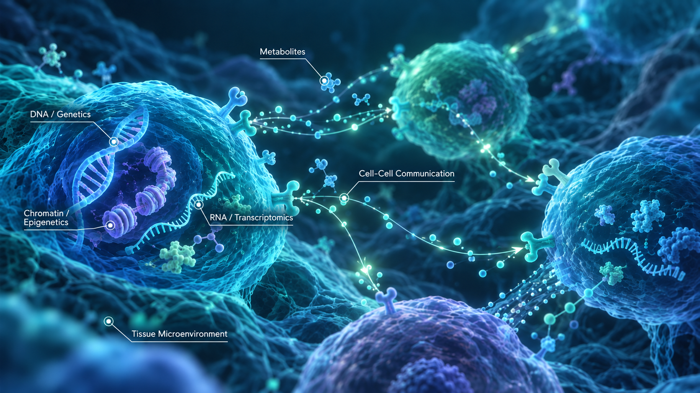

Genetic Disorder
Genetic variantions, GWAS, eQTL, caQTL, and functional genomics

Genetic variantions, GWAS, eQTL, caQTL, and functional genomics
Obesity, diabetes, adipose biology, tissue metabolism and inter-organ communication.
Gene regulation, tumor-associated cellular interactions, immunometabolism and therapeutic resistance.
We welcome inquiries from prospective trainees and collaborators with interests in multiomics, AI, computational biology and disease mechanisms.